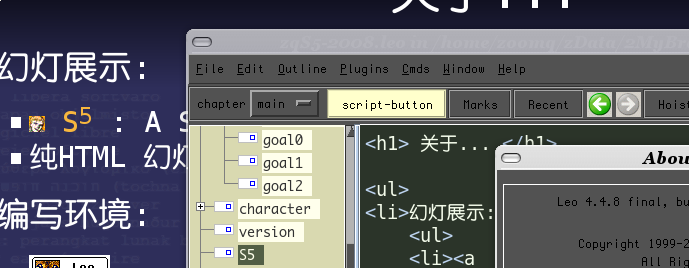

免责聲明
山寨的，非业界公认的，个人体验为基础!
 参考所有同好行为总结而得
......
参考所有同好行为总结而得
......
- 一切资料来自网络互动挖掘
- 一切想法来自日常学习工作
- 一切体悟来自各种沟通交流
- 一切知识来自社区分享印证
- 一切经验来自个人失败体验
......
范畴::
成书趣事儿／体验／经验
- 5' 成书助力:FLOSS
- 10'组织分布式图书工程
- 25' 自由交流...
class="incremental"...
+OS
友好而自在...
Ubuntu
...http://wiki.woodpecker.org.cn/moin/GraphViz
+FF
网页收集管理中心
pidgin-2009-09-03-235116_403x337_scrot.png
edo-lovpy-2009-09-03-143051_612x291_scrot.png
+维基
最靠谱的知识汇集平台
MoinMoin
...
+版本管理
跨平台的主流版本管理系统
SVN
...
+scrot
CLI的方便截屏工具...
...scrot
+编辑环境
基于提纲的文学化编辑环境...
...scrot
＋S5
编辑环境特意选择了基于HTML的幻灯系统,来表达知识传播的媒介态度..
- 幻灯展示:
-
 S5 : A Simple Standards-Based Slide Show System
S5 : A Simple Standards-Based Slide Show System
- 纯HTML 幻灯效果工具 本地介绍页面
- 编写环境:
 Leo Leo
文学编程环境
纯Py实现的通用编辑环境
|

|
+.mm
跨平台的思维及数据图谱...
freemind
...http://wiki.woodpecker.org.cn/moin/GraphViz
+.dot
自在快捷的图形化脚本...
...http://wiki.woodpecker.org.cn/moin/GraphViz
+
基于Plone 的敏捷SaaS式项目管理
edo-lovpy-2009-09-03-143051_612x291_scrot.png
在线图书工程
思想和经验,公开在OBP工程维基中！
class="incremental"...
工程基元素本
和正常的软件工程完全一致
class="incremental"...
COOL
class="incremental"...
作者s
创作分享！
人多
力量大！
class="incremental"...
作者.0
原创
class="incremental"...
作者.1
老创
清风
class="incremental"...
作者.2
豆创
class="incremental"...
作者.3
教创
class="incremental"...
作者.4
M创
class="incremental"...
作者.5
刘创
class="incremental"...
作者.6
黄创
黄毅
class="incremental"...
作者.7
CTO
洪强宁
class="incremental"...
作者.8
木创
class="incremental"...
作者.9
潘创
class="incremental"...
作者.10
侠创
class="incremental"...
作者.10.1
侠创
class="incremental"...
作者.11
哲创
class="incremental"...
作者.12
校创
孔建军
class="incremental"...
作者.13
校创
高辉
class="incremental"...
作者.00
G创
class="incremental"...
依托社区:
各种相关技术社区是根本动力！其中，最亲密的:
...
催生婆s:
专业／耐心／认真的编辑是个宝！
- 杨福川
- 方舟
- 周筠(Yeka)
- 彭俊
- 赵士威
- 杨绣国
- 何艳
- ...
...
架构源自:KM
从IT角度公认的KM系统理解公式..

...
KM:核心理念
有知识可以分享,成员有分享的冲动/动力,组织有分享的平台...
分享
...
成书的根本原因::
一切向靠谱，并坚持下来！
靠谱
Kaopulity
...
靠谱::解析
令一个组织内所有过程都可用！
- Keep
- all
- of
- processes
- usablity
...
靠谱::什么是过程?
任何一个有目标／限制／条件的行动组合都是过程!
行动的
顺序组合
...
靠谱::什么是可用?
全知／全认／全用／可善！ AKA~= All Know All!
AKA
...
小结
- FLOSS工具的高效使用
- 动力源自社区
- Kaopulity
是也乎::
任何8g都可以...

文档版本
- 修订历史::
- 090919 广州技术沙龙No.2 增补礼品问题
- 090908 增补成书小史
- 090903 增补图片!
- 090902 增补流程图谱
- 090901 增补zeuux新logo
- 090831 确定演示结构
- 090828 创建
成书小传::
杨福川出现
本来是讨论MySQL 相关的图书...
2006-12-29
成书小传::
BPUG第14次.豆瓣现场会课
首次公开讨论原创图书,1.20号周筠见面确认计划
http://wiki.woodpecker.org.cn/moin/ObpBroadview
成书小传::
创立OBP入口
首次将出版社引入社区...方舟非常重要...
成书小传::
CPyUG总第20次会课
，方舟出现佐证原创图书计划...首本!
080601-pycode.jpg
成书小传::
开始波折...
不断的调整图书内容结构，深深体会生产的滋味...
成书小传::
首部原创中文Python相关技术图书出版
可恨哪...
090902-lovpy.jpg
成书小传::
r2062
是交付版本...
因为封面以及其它...继续坚持...
反问::
可爱的Python 图书奖品
Pythonic